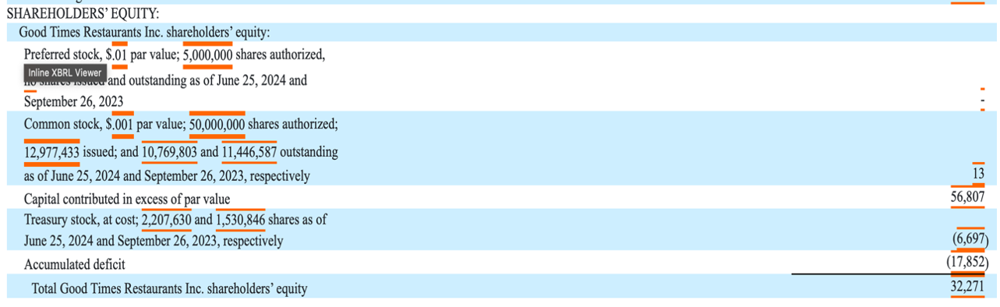
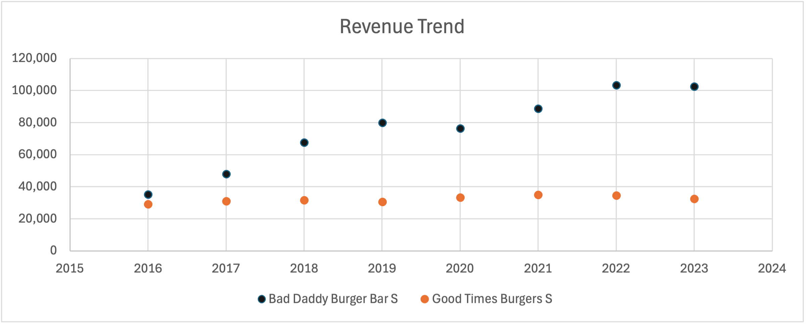
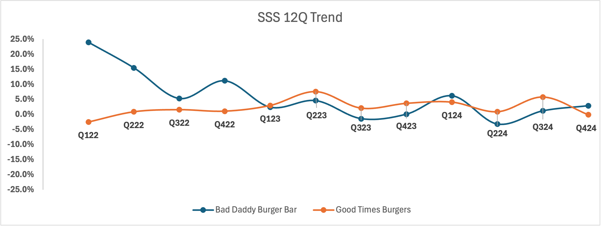
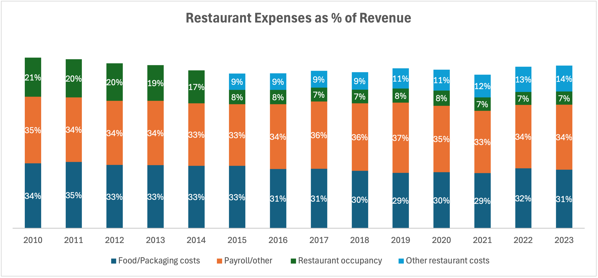
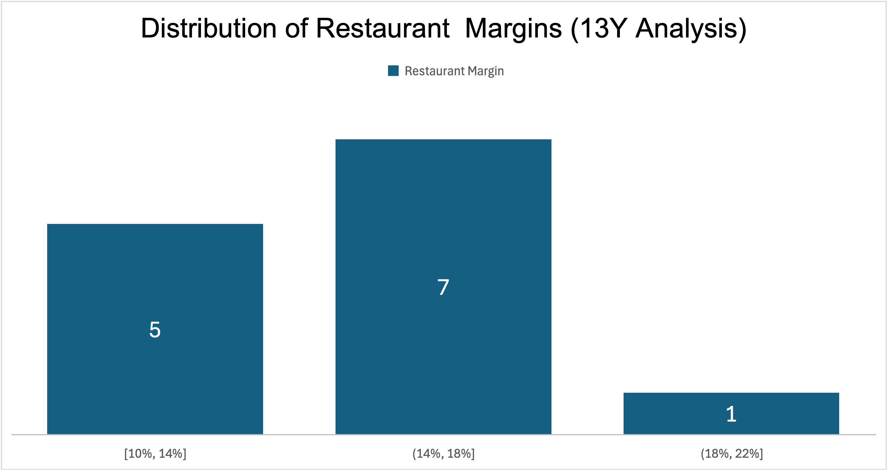
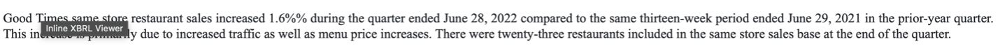
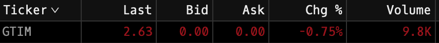
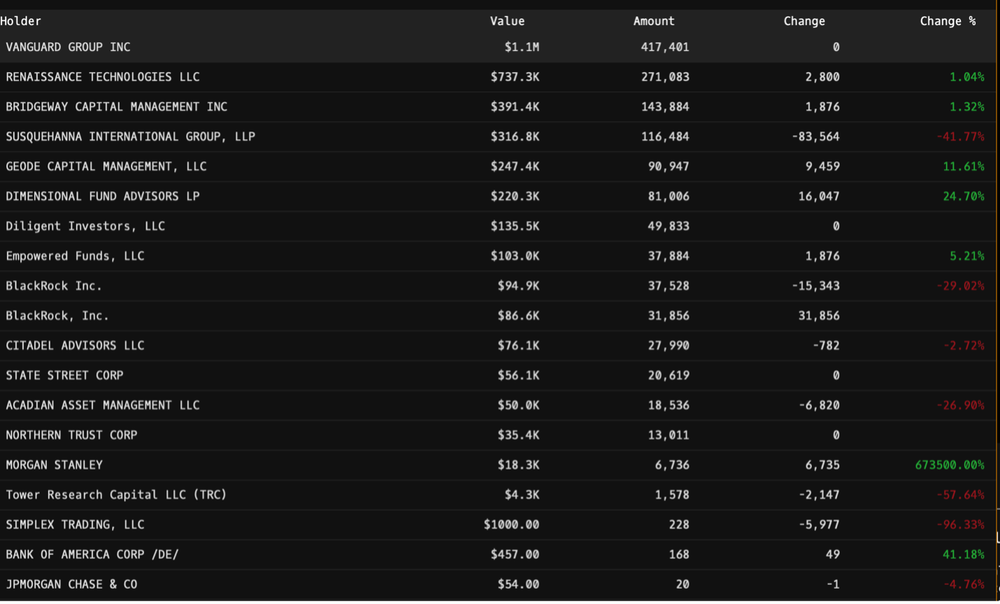
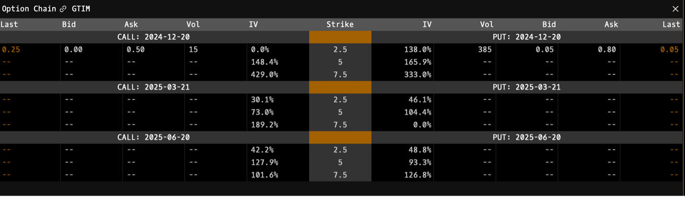

Date: November 22, 2024
My current stance on GTIM is neutral. While there is potential for upside if management successfully stabilizes same-store sales trends and executes a strategic turnaround, the company’s persistent operational inefficiencies and competitive pressures leave its long-term prospects uncertain. With valuation sensitivities tied closely to upcoming results and institutional behavior, I believe the risk-reward balance remains evenly poised at this time.
GTIM’s capital structure reflects modest liquidity but concerning inefficiencies:
As of the company’s Q3-24 filing, GTIM’s market cap is $28.5M. The company has cash of $4.8M and total debt of $1.1M, imputing an Enterprise Value of $24.8M.
The $1.1M debt stems primarily from the Cadence Credit Facility, a loan agreement capped at $8M with a maturity date of 4/20/28. This facility includes a weighted average interest rate of 8.42% (as of 6/25/24) and a 0.25% fee on unused portions of the loan. Currently, GTIM has borrowed $750K and issued $10K in letters of credit, leaving $7.24M available. However, borrowing more than $4M (>50% of the facility) triggers stricter financial covenants, limiting the company’s ability to spend on growth or shareholder payouts. Additionally, GTIM has incurred $299K in origination fees, with $102K still unamortized as of 6/24/24. The facility is secured by a 1st priority lien on all company assets.
The Parker Promissory Note represents an additional unsecured liability related to the acquisition of Good Times Burgers. This loan is fully amortized over 10 years at a 5% annual interest rate, with an outstanding balance of $380K as of 6/25/24. Combined, these debts total $1.13M.
The high borrowing costs (8.42% average interest) and limited available credit leave GTIM with minimal financial flexibility. To navigate these constraints, the company must prioritize operational efficiency and disciplined capital allocation, focusing on initiatives that deliver measurable returns.
Lastly, since its inception, GTIM has required $3.20 of investor capital to produce $1 in losses, reflecting significant inefficiencies in the company’s operations and capital allocation.
Plans never materialize when you play Russian roulette with shareholder capital. What happened to the Good Times? Over the past 13 years, GTIM achieved 17% average revenue growth, driven primarily by Bad Daddy’s Burger Bar. In contrast, Good Times Burgers stagnated with growth roughly flat over the past 7 years, reflecting a decline in customer demand and operational relevance.
To sustain growth, GTIM must focus on expanding Bad Daddy’s while reevaluating Good Times Burgers’ future.
The performance of Good Times Restaurants Inc. demonstrates the stark divergence between its two brands. Bad Daddy’s experienced strong growth post-COVID, peaking at 24.0% in Q122. However, growth declined to 15.5% in Q222 and further to 5.3% by Q322, reflecting normalization in demand and possibly macroeconomic pressures. Growth briefly turned negative in Q323 (-1.4%) before stabilizing at low single-digit levels by Q424 (2.9%). This indicates resilience but also highlights challenges in sustaining momentum.
Good Times Burgers, by contrast, showed more erratic performance. From negative growth (-2.5%) in Q122, it briefly improved to 7.6% in Q223 before returning to volatile, flat, or negative growth, ending Q424 at -0.1%. This pattern underscores operational challenges, including difficulty attracting traffic and maintaining pricing power in a highly competitive QSR environment.
The "Restaurant Expenses as % of Total Revenue" chart highlights the stability of GTIM's major expense categories over the past decade, with total operating costs largely unchanged as a percentage of revenue. Food/Packaging Costs and Payroll/Other Costs consistently account for the largest shares of expenses, at 31%-34% and 30%-35%, respectively.
While expense ratios have remained steady, the company has failed to achieve meaningful reductions in its largest cost drivers:
Despite achieving some cost stability, the company must tackle these opportunities to improve margins and build resilience against external economic pressures.
The Y/Y Revenue Growth vs. Restaurant Margins chart highlights the company's dependence on revenue growth to maintain profitability. Margins consistently improve during periods of high revenue growth, as seen in 2015 and 2016, where growth exceeded 50% and margins approached 20%. However, when revenue growth stagnates or declines, as in 2020 and 2023, margins contract sharply, reflecting the company's inability to adjust its cost structure to lower sales volumes.

Over the past 13 years, restaurant margins have mostly ranged between 14%-18% in 7 out of 13 years, with only 3 years achieving margins between 18%-22%. Margins in this higher range were driven primarily by extraordinary revenue growth, such as the 57% spike in 2015 and 46% in 2016. Without such growth, margins tend to fall below 18%, as expenses often grow in tandem with or outpace revenue, as illustrated in the "Distribution of Restaurant Margins" chart.
While recent improvements in Free Cash Flow (FCF) are promising, the historical challenges raise questions about GTIM’s ability to sustain growth. Positive FCF since 2020 reflects operational discipline, but modest levels in 2022-2023 suggest a fragile recovery. Monitoring Capex and operational efficiency will be key to long-term stability. A sustained improvement in FCF will be critical to funding strategic initiatives such as automation, rebranding, and expansion of Bad Daddy’s.
8-K filed 10/15/24: SSS decreased -0.1% for Good Times and increased 3.2% for Bad Daddy’s. Prior year SSS increased 2.9% and decreased 1.2% for Good Times and Bad Daddy’s respectively. The CEO Ryan Zink has stated that the business cannot compete with competition.
Ryan Zink, President and CEO, said “Our Good Times brand has been negatively impacted by the return of deep discounting in the quick-service environment. We remain committed to our quality position and cannot match the low-price points of the mass market competition.”
The valuation is highly sensitive to two key factors:
GTIM's current valuation is precarious, heavily reliant on management's ability to drive strategic improvements and stabilize SSS trends. While an upper valuation of $2.70 per share assumes aggressive revenue growth and disciplined cost management, the lower bound of $2.11 reflects the risk of continued stagnation and shrinking market relevance.
Unless management implements a compelling turnaround strategy or explores a strategic sale, GTIM remains vulnerable to downside risks.
In the company's quarterly filing (Report Date: 6/28/22), a typographical error was observed: '1.66%%'. While such minor errors may seem trivial, they can suggest broader lapses in the review process and raise concerns about the company’s attention to detail in financial reporting.
Even small mistakes in filings can undermine confidence among investors and stakeholders, particularly when accuracy is essential for decision-making and regulatory compliance. Such issues may reflect broader inefficiencies or insufficient quality control measures within the organization.
Low average trading volume (9.8K shares/day) and concentrated institutional ownership (~8.8%) create risks of significant stock price declines if major shareholders exit. For example, Renaissance Technologies holds 271,083 shares (~2.51%), requiring 28 trading days to exit, potentially causing a 5-12.5% price impact. This concentration of ownership creates vulnerability. Should any of these institutions decide to liquidate their positions, GTIM’s limited liquidity could trigger significant downward pressure on the stock price.
 Currently, 385 put contracts have been traded at a $2.50 strike price (expiration: Dec 20, 2024), reflecting a significant level of activity on the bearish side. This could indicate that investors suspect the stock price may fall below $2.50, making these options profitable. If institutional investors exit their positions, this could pressure the stock price downward, potentially validating this bearish outlook. However, if the business remains stable and the stock price stays above $2.50, these options will likely expire worthless.
On the bullish side, only 15 call contracts have been traded at the $2.50 strike price. This relatively low volume suggests limited interest or optimism in the stock’s upward potential at this level, especially when compared to the notable activity on the put side. While these call options are currently in the money with the stock price at $2.65, whether they can be sold at a profit depends on the premium originally paid for the options. If the premium exceeds the intrinsic value of $0.15 per share, the holder may not yet realize a profit.
Punchline: This imbalance in options activity highlights bearish sentiment driven by GTIM’s operational inefficiencies and institutional risks—an urgent call for management to address these issues.
